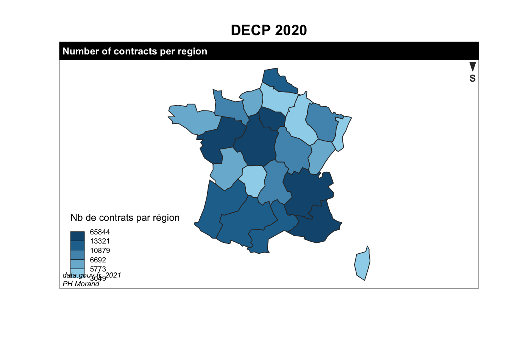
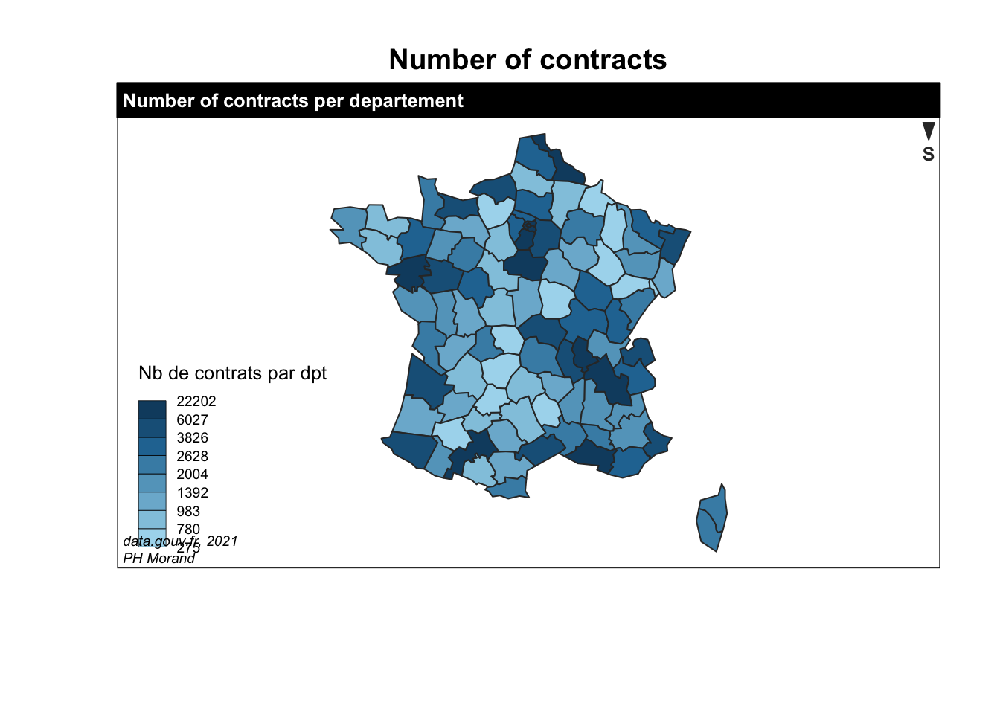

library(tidyverse)
library(banR)
library(jsonlite)
library(magrittr)
library(data.tree)
library(geosphere)
library(sf)
library(cartography)
library(stringr)Two main datafiles are used: the first one is the collection of DECP (données essentielles de la commande publique, main data of public procurement). See here.
The second one is the SIRENE datafile. See here
# creating the data repository
data_dir <- 'data'
if (!dir.exists(data_dir)) {
dir.create(data_dir)
}
# downloading the DECP JSON file from the remote data.gouv.fr site.
DECP_url <- "https://www.data.gouv.fr/fr/datasets/r/16962018-5c31-4296-9454-5998585496d2"
DECP_destfile <- str_c(data_dir, "/decp.json")
if (!file.exists(DECP_destfile)) {
download.file(DECP_url, DECP_destfile)
}
# creating the dataframe
df<-as.data.frame(fromJSON(DECP_destfile, flatten=TRUE)[['marches']])
names(df)## [1] "id" "source"
## [3] "uid" "_type"
## [5] "objet" "codeCPV"
## [7] "dureeMois" "dateNotification"
## [9] "datePublicationDonnees" "montant"
## [11] "formePrix" "titulaires"
## [13] "modifications" "nature"
## [15] "procedure" "dateSignature"
## [17] "dateDebutExecution" "valeurGlobale"
## [19] "montantSubventionPublique" "donneesExecution"
## [21] "concessionnaires" "uuid"
## [23] "lieuExecution.code" "lieuExecution.typeCode"
## [25] "lieuExecution.nom" "autoriteConcedante.id"
## [27] "autoriteConcedante.nom" "acheteur.id"
## [29] "acheteur.nom"# downloading the SIRENE datafile
sirene_destfile <- str_c(data_dir, "/etablissements-sirene.zip")
# sirene_url = "https://www.data.gouv.fr/fr/datasets/r/3966c990-d3a0-48b4-95b9-745fa24b2589"
sirene_url = "https://www.data.gouv.fr/fr/datasets/r/9e26138d-7938-4c1e-971b-d307489f12db"
# It is a dynamic link. The latest version should be checked here:https://www.data.gouv.fr/fr/datasets/base-sirene-des-entreprises-et-de-leurs-etablissements-siren-siret/ Sirene Fichier StockEtablissement
if (!file.exists(sirene_destfile)) {
download.file(sirene_url, sirene_destfile)
# The unzipped CSV file is more than 4GB, so R's unzip will choke on it
# We've got to unzip it manually
unzip(sirene_destfile,
unzip = getOption("unzip"),
exdir = data_dir)
}
sirene_csv <- str_c(data_dir, '/', unzip(sirene_destfile, list = TRUE)[[1]])
# Alternatively, if this doesn't work for memory reasons, run directly:
#sirene_csv <- str_c(data_dir, '/', "StockEtablissement_utf8.csv")
base_sirene <- read_csv(
sirene_csv,
col_types = cols_only(
siret = col_character(),
codePostalEtablissement = col_character(),
codeCedexEtablissement = col_character()
)
) %>%
rename(sirene_code_postal=codePostalEtablissement)In order to geocode the DECP, we use de SIRET number of the purchasers and the SIRET number of the selected suppliers. The first step is to add the zip-code of the purchasers.
# Add postal codes to DECP
df<-left_join(df, base_sirene,by=c("acheteur.id"="siret"))In the case of suppliers, it is necessary to proceed in step by step. Indeed, in some cases, several companies are selected on the same contract. We therefore have to flatten our database.
# number of selected suppliers
nb_tit<-c()
for(i in 1:length(df$uid)){nb_tit[[i]]<-length(df$titulaires[[i]]$id)}
df$nb_tit<-nb_tit
# Creation of the multi-attribute table
k<-1
uid<-c()
for(i in 1:length(df$uid)){for(j in 1:ifelse(df$nb_tit[[i]]==0,1,df$nb_tit[[i]])){uid[[k]]<-df$uid[[i]]; k<-k+1}}
tit<-c()
k<-1
for(i in 1:length(df$uid)){for(j in 1:ifelse(df$nb_tit[[i]]==0,1,df$nb_tit[[i]])){tit[[k]]<-df$titulaires[[i]]$id[j]; k<-k+1}}
df2<-data.frame()
df2<-as.data.frame(cbind(uid, tit))
df2$tit<-as.character(df2$tit)
df2$uid<-as.character(df2$uid)
# associate postal code to SIRET of selected suppliers
df2<-left_join(df2, base_sirene,by=c("tit"="siret"),keep=TRUE)
# join everything
df<-left_join(df2,df, by="uid")
# Remove unnecessary databases
rm(base_sirene,df2,nb_tit,tit,uid)# Creation of a year column
df$year <-str_sub(df$id,1,4)
# Creation of a departement_tit column (tit = titulaire = supplyer)
df$departement_tit <-str_sub(df$sirene_code_postal.x,1,2)
# Creation of a departement-buyer column
df$departement_ach <-str_sub(df$sirene_code_postal.y,1,2)
#creation of dummy local buy
df$local<-ifelse(df$departement_ach==df$departement_tit,1,0)
summary(df$local)## Min. 1st Qu. Median Mean 3rd Qu. Max. NA's
## 0.00 0.00 0.00 0.44 1.00 1.00 16813# Creation of 2 digit CPV column / documentation, see cpv.pm/?hl=en
df$CPV2<-str_sub(df$codeCPV,1,2)Postal codes enable us to merger GPS coordinates:
# Import of GPS coordinantes
# to do: the code_postaux.csv is my own file. I don't remember where it comes from. Clean and open source is needed.
GPS_destfile <- str_c(data_dir, "/code_postaux.csv")
gps <- read_csv(GPS_destfile)
# Merge data to import GPS buyer coordinates
df<-left_join(df, gps,by=c("sirene_code_postal.y"="Code_postal"))
# Merge data to import GPS supplier coordinates
df<-left_join(df, gps,by=c("sirene_code_postal.x"="Code_postal"))We also use the NUTS of the suppliers and the purchasers. The Nomenclature of Territorial Units for Statistics (NUTS) was established by Eurostat in order to provide a single uniform breakdown of territorial units for the production of regional statistics for the European Union.
# Creation of NUTS_ach and NUTS_tit columns
NUTS_destfile <- str_c(data_dir, "/dept_nuts.csv")
dept_nuts<-read_csv(NUTS_destfile)
df<-left_join(df,dept_nuts, by=c("departement_tit"="0C"))
df<-left_join(df,dept_nuts, by=c("departement_ach"="0C"))
names(df)[names(df) == 'NUTS_3.x'] <- 'nuts_tit'
names(df)[names(df) == 'NUTS_3.y'] <- 'nuts_ach'We add geographical variables to the main dataframe:
# Distance computation in km
for(i in 1:length(df$uid)){df$distance[i]<-distGeo(c(df$coordonnees_gps1.x[i],df$coordonnees_gps2.x[i]),c(df$coordonnees_gps1.y[i],df$coordonnees_gps2.y[i]))}
df$distance<-df$distance/1000
# Creation of 4 and 3 digit NUTS column
df$nuts4_tit<-str_sub(df$nuts_tit,1,4)
df$nuts4_ach<-str_sub(df$nuts_ach,1,4)
df$nuts3_tit<-str_sub(df$nuts_tit,1,3)
df$nuts3_ach<-str_sub(df$nuts_ach,1,3)
table(df$nuts3_ach, df$nuts3_tit)##
## FR1 FR2 FR3 FR4 FR5 FR6 FR7 FR8 FRA
## FR1 46276 4012 1253 1554 2922 1760 3236 2021 419
## FR2 7707 25875 1117 1583 2605 984 2200 741 6
## FR3 1914 610 6965 341 285 212 592 177 2
## FR4 2294 1168 229 12123 327 226 1786 314 16
## FR5 4810 1351 301 402 18953 1147 1078 625 94
## FR6 3307 663 216 383 1117 18671 1504 1245 18
## FR7 5020 1069 410 1904 912 926 31885 1644 10
## FR8 5348 651 378 644 948 1226 2457 27267 54
## FRA 1078 114 26 60 188 180 200 214 26456# Number of contracts for 2006
data(nuts2006)
region<-as.data.frame(table(df$nuts4_ach))
names(region)[names(region) == 'Var1'] <- 'id'
choroLayer(spdf = nuts2.spdf, df = region, var = "Freq", legend.title.txt = "Nb de contrats par région")
title("DECP 2020")
# Titles, legend, sources
layoutLayer(title = "Number of contracts per region",
author = "PH Morand",
sources = "data.gouv.fr, 2021",
scale = NULL,
south = TRUE)
departement<-as.data.frame(table(df$nuts_ach))
names(departement)[names(departement) == 'Var1'] <- 'id'
choroLayer(spdf = nuts3.spdf, df = departement, var = "Freq", legend.title.txt = "Nb de contrats par dpt")
title("Number of contracts")
layoutLayer(title = "Number of contracts per departement",
author = "PH Morand",
sources = "data.gouv.fr, 2021",
scale = NULL,
south = TRUE)